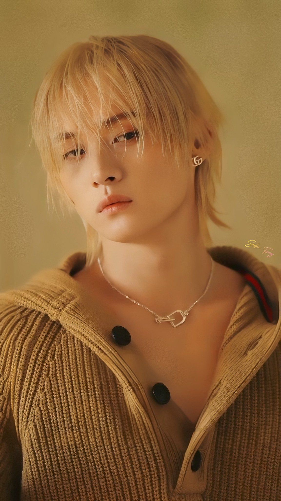
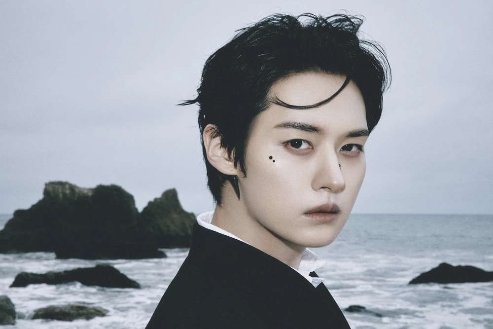
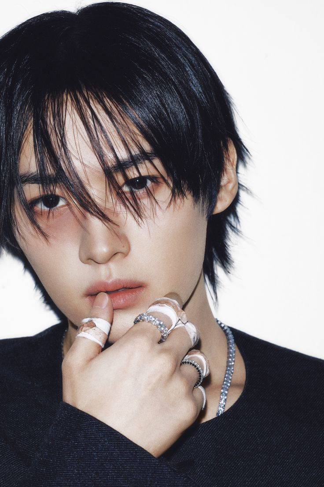
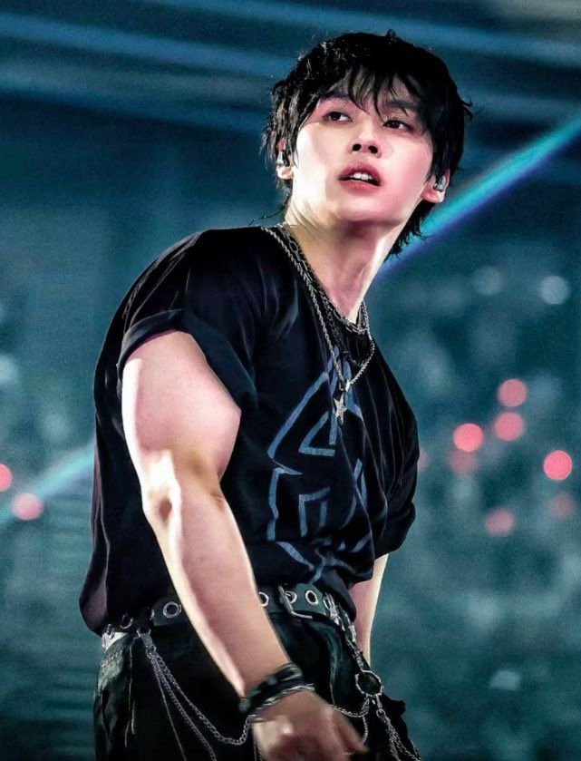

Lee Know (이민호)
Perfil del Artista
Programas de Televisión
Show! Music Core (MBC, 2021-2023) MC oficial junto a Jung Woo y Min Ju
Show! Music Core (MBC, 2023) MC oficial junto a Jung Woo y Sull Yoon
Stray Kids (Mnet, 2017) - Programa de supervivencia
Programas de Radio
(MBC) Idol Radio (09.02.2019) Ep. 129 junto a Hyun Jin y Ji Beom de Golden Child
(SBS Radio) NCT Night Night (09.09.2018) junto a Bang Chan, Woo Jin y Chang Bin
Anuncios Comerciales
2018: Ceci Korea junto a Hyun Jin
Curiosidades
Estudios: Escuela Secundaria Técnica Gimpo Jeil (Graduado).
Periodo de entrenamiento: 4 meses.
Modelo a seguir: Taecyeon de 2PM.
Hobbies: Diseñar coreografías, fotografía, ver anime y cine.
Color favorito: Azul menta.
Idiomas: Coreano (Lengua materna), Japonés (Intermedio) e Inglés (Básico).
Lema personal: "Vamos a comer y vivir bien".
Fue bailarín de respaldo de BTS en 2016 (durante la presentación de "Rainism" en Mnet y en el BTS Live Trilogy Episodio III: The Wings Tour en Japón), experiencia que consolidó su sueño de ser una gran estrella del escenario.
Es ambidiestro y un bailarín con técnica excepcional.
Creó la icónica coreografía para "Hellevator", canción representativa de Stray Kids.
Tiene registradas 4 canciones oficiales con derechos de autor a su nombre ante la KOMCA.
Apadrinó a un niño de África y realiza constantes donaciones para salud y educación infantil a través de organizaciones no gubernamentales.
Galería de Fotos



